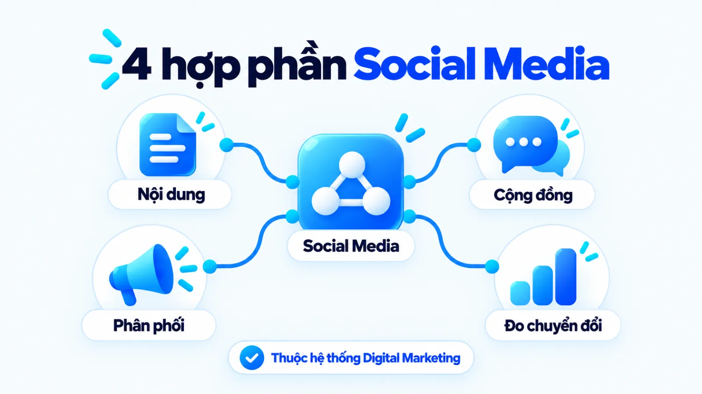
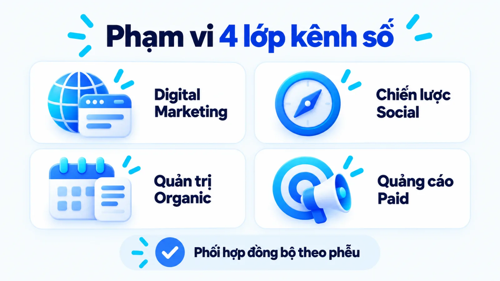
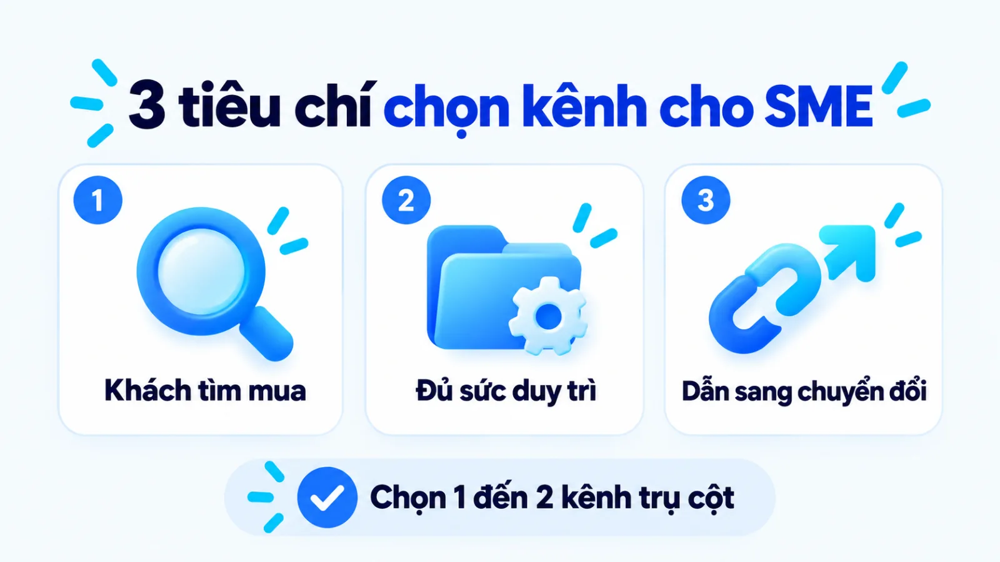
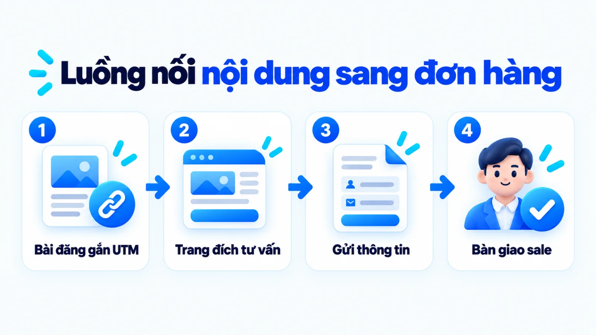
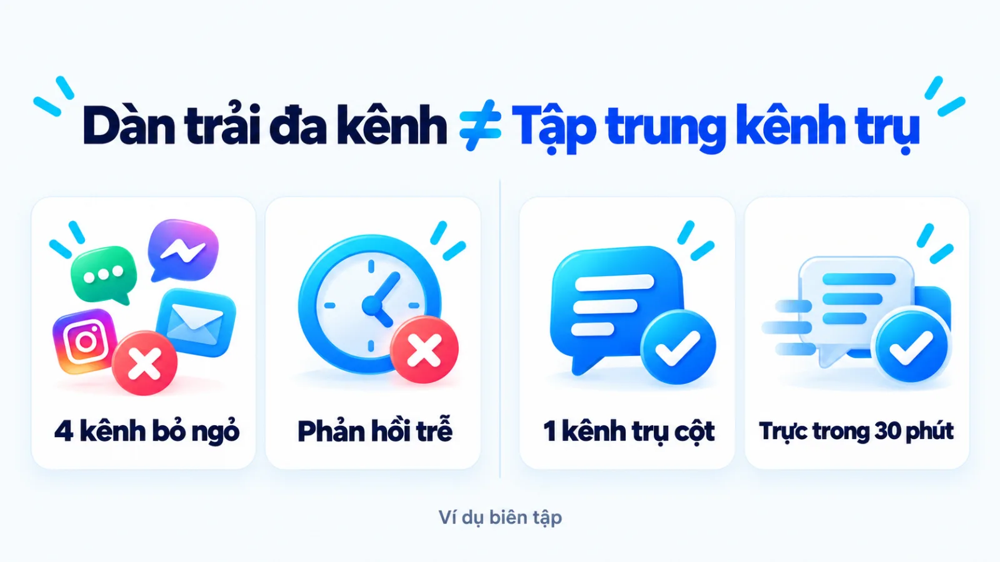
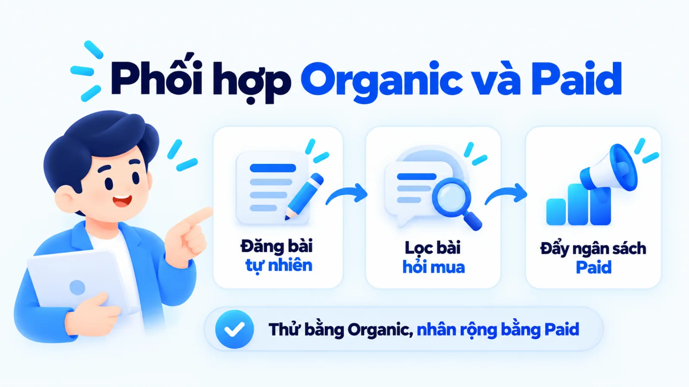
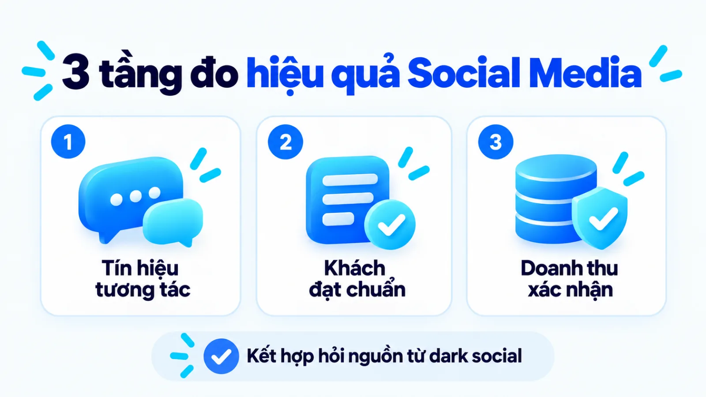

Social media marketing digital là gì cho SME?
Social media marketing digital là nhánh tiếp thị nằm trong hệ thống Digital Marketing, sử dụng các nền tảng mạng xã hội để xây dựng nhận diện thương hiệu, kết nối với khách hàng mục tiêu, kéo lưu lượng truy cập và thúc đẩy hành động chuyển đổi. Với doanh nghiệp vừa và nhỏ, khi nhân sự và ngân sách còn hạn chế, việc mở dàn trải nhiều kênh hoặc chỉ chạy theo lượt tương tác bề nổi rất dễ làm đứt gãy mạch chuyển đổi sang doanh thu thực tế. Vì vậy, người phụ trách cần xác định rõ mạng xã hội đảm nhận vai trò gì trong phễu bán hàng và kênh nào thực sự dẫn người xem sang bước mua hàng. Tôi là Lê Tuấn Việt, Marketing Leader tại TAKI Group. Trong bài viết này, tôi phân tích ranh giới giữa tiếp thị mạng xã hội với các hoạt động gần nghĩa, tiêu chí chọn nền tảng theo nguồn lực và cách đo hiệu quả gắn với mục tiêu kinh doanh.
- Đăng ngày
- Cập nhật

Tóm tắt nhanh
- Social media marketing digital là một hợp phần của Digital Marketing, kết hợp nội dung, quản trị cộng đồng, phân phối tự nhiên lẫn trả phí và đo lường chuyển đổi thay vì chỉ đăng bài duy trì.
- Doanh nghiệp vừa và nhỏ có ít nhân sự nên ưu tiên làm sâu một nền tảng trụ cột nơi khách hàng thực sự tìm thông tin mua hàng trước khi mở rộng đa kênh.
- Nội dung tự nhiên (organic social) giữ vai trò xây dựng niềm tin và kiểm chứng thông điệp, còn quảng cáo trả phí (paid social) khuếch đại những bài đăng đã chứng minh được tỷ lệ chuyển đổi.
- Hiệu quả mạng xã hội cần được đọc qua khung ba tầng gồm tín hiệu tương tác, hành vi đạt chuẩn trên đường mua và kết quả kinh doanh đã xác nhận.
Mục lục bài viết8 phần
Social media marketing digital là gì?
Social media marketing digital (SMM, tức tiếp thị mạng xã hội trong môi trường số) là nhánh của Digital Marketing (tiếp thị kỹ thuật số) sử dụng các nền tảng mạng xã hội để xây dựng nhận diện thương hiệu, kết nối khách hàng mục tiêu, kéo lưu lượng truy cập và thúc đẩy chuyển đổi. Với SME (doanh nghiệp vừa và nhỏ), hoạt động này gắn điểm chạm cộng đồng trực tuyến với phễu bán hàng thay vì chỉ đăng bài duy trì hiện diện.
Theo định nghĩa chuyên môn của American Marketing Association (Hiệp hội Marketing Hoa Kỳ), Digital Marketing bao hàm mọi phương thức tiếp thị thực hiện qua thiết bị điện tử và môi trường internet, trong đó mạng xã hội là một kênh cấu thành. Trên nền tảng đó, Investopedia làm rõ Social Media Marketing tập trung khai thác các không gian nơi người dùng thiết lập mạng lưới kết nối và chia sẻ thông tin để mở rộng độ phủ thương hiệu, dẫn truy cập về website và tạo ra giao dịch kinh tế.

Vị trí của mạng xã hội trong Digital Marketing
Khi đặt vào bức tranh tổng thể của hệ thống digital marketing, mạng xã hội đóng vai trò là kênh khởi tạo sự chú ý, tương tác hai chiều và duy trì kết nối thường xuyên với thị trường. Nếu công cụ tìm kiếm giúp doanh nghiệp đón nhóm khách hàng đã có sẵn nhu cầu tra cứu chủ động, thì mạng xã hội giúp thương hiệu xuất hiện tự nhiên trong dòng thông tin hằng ngày của người dùng trước cả khi họ phát sinh ý định mua hàng.
Tại Việt Nam, báo cáo Digital 2025: Vietnam do DataReportal công bố năm 2025 lưu ý dữ liệu tiếp cận mạng xã hội lấy từ công cụ lập kế hoạch quảng cáo và đo theo định danh tài khoản hoạt động, không phải số cá nhân duy nhất. Vì một người có thể dùng nhiều tài khoản, các SME (doanh nghiệp vừa và nhỏ) không nên đánh đồng độ phủ tài khoản với số người mua thực tế của mình.
Bốn hợp phần nội dung, cộng đồng, phân phối và đo lường
Nhiều đội ngũ tại doanh nghiệp vừa và nhỏ đăng bài đều đặn mỗi ngày nhưng không tạo ra khách hàng tiềm năng vì tách rời việc làm nội dung khỏi cơ chế phân phối và đo lường. Để vận hành như một mắt xích tạo chuyển đổi thật sự, hoạt động tiếp thị mạng xã hội phải kết hợp đồng bộ bốn hợp phần cốt lõi gồm:
- Sáng tạo nội dung theo ngữ cảnh: Chuyển hóa thông điệp sản phẩm thành định dạng bài viết, hình ảnh hoặc video khớp với thói quen tiêu thụ thông tin trên từng nền tảng.
- Quản trị cộng đồng và tương tác: Duy trì đối thoại hai chiều qua bình luận, tin nhắn, giải đáp thắc mắc mua hàng và xử lý phản hồi để củng cố niềm tin thương hiệu.
- Phân phối tự nhiên và trả phí: Kết hợp khả năng lan tỏa tự nhiên tới người theo dõi hiện hữu với ngân sách quảng cáo trả phí để mở rộng tệp khách hàng mục tiêu.
- Đo lường theo hành trình mua: Theo dõi chuỗi hành vi từ lúc người dùng xem bài, nhấp sang trang đích đến khi để lại thông tin liên hệ hoặc hoàn tất đơn hàng.
Social media marketing digital khác gì kênh gần?
Social media marketing digital khác với Digital Marketing tổng thể ở phạm vi kênh triển khai, đồng thời rộng hơn quản trị mạng xã hội hằng ngày và quảng cáo mạng xã hội trả phí vì bao gồm cả chiến lược nội dung, phân phối lẫn đo lường chuyển đổi. Bảng đối chiếu bốn khái niệm dưới đây giúp doanh nghiệp phân định rõ phạm vi để giao đúng việc và đúng chỉ số đánh giá.
| Hoạt động tiếp thị | Phạm vi và mục tiêu trọng tâm | Đầu ra và chỉ số đo lường |
|---|---|---|
| Digital Marketing | Bao phủ toàn bộ điểm chạm số gồm website, SEO, tìm kiếm trả phí, email và mạng xã hội | Tổng lưu lượng truy cập đa kênh, số khách hàng tiềm năng, chi phí chuyển đổi và doanh thu thuần |
| Kênh Social Media | Hoạt động trên các nền tảng mạng xã hội; kết hợp làm nội dung, chăm sóc cộng đồng và phân phối bài | Độ phủ thương hiệu, lưu lượng truy cập từ mạng xã hội về trang đích, lượt nhắn tin và chuyển đổi |
| Quản trị mạng xã hội | Duy trì lịch đăng bài tự nhiên đều đặn, giữ giọng thương hiệu, chăm sóc bình luận và trực hộp thư | Tần suất xuất bản bài đúng hạn, tỷ lệ tương tác tự nhiên trên trang và tốc độ phản hồi người xem |
| Quảng cáo trả phí | Dùng ngân sách trả phí mua hiển thị và phân phối theo thuật toán tới đúng nhóm khách hàng mục tiêu | Chi phí mỗi lượt hiển thị, lượt nhấp, chi phí mỗi khách tiềm năng và doanh số |
Bảng phân biệt trên đặt trong điều kiện doanh nghiệp tách bạch các đầu việc chuyên môn để quản lý KPI (chỉ số đánh giá hiệu quả công việc). Ở các doanh nghiệp nhỏ chỉ có một đến hai nhân sự, một người có thể kiêm nhiệm nhiều vai trò nhưng vẫn cần phân biệt rõ đầu ra của từng nhóm việc để không dùng chỉ số tương tác thay cho kết quả bán hàng.

Ranh giới với quản trị mạng xã hội hằng ngày
Quản trị mạng xã hội (Social Media Management) tập trung vận hành tài khoản hằng ngày như lên lịch bài đăng, trả lời bình luận và giữ sự nhất quán của brand voice và tone of voice (giọng điệu và sắc thái thương hiệu). Theo tài liệu của Google Analytics Help cho GA4 (Google Analytics 4), lượt truy cập qua liên kết không trả phí từ mạng xã hội được xếp vào nhóm Organic Social (mạng xã hội tự nhiên).
Nếu doanh nghiệp chỉ dừng ở việc duy trì lịch đăng bài tự nhiên mà thiếu định hướng kéo người xem về trang đích hoặc phễu tư vấn, hoạt động này mới giải quyết được khâu hiện diện thương hiệu chứ chưa hoàn thành vai trò tiếp thị tạo chuyển đổi.
Ranh giới với quảng cáo mạng xã hội trả phí
Ở chiều ngược lại, quảng cáo mạng xã hội (Social Media Advertising hay Paid Social) dùng ngân sách trả phí để mua hiển thị và tiếp cận người dùng theo tiêu chí nhắm chọn. Theo Google Analytics Help, kênh Paid Social ghi nhận lượt truy cập vào website hoặc ứng dụng qua quảng cáo trên mạng xã hội.
Tài liệu của Meta Business Help Center chia mục tiêu chiến dịch thành sáu nhóm kết quả gồm Mức độ nhận biết, Lưu lượng truy cập, Lượt tương tác, Khách hàng tiềm năng, Quảng cáo ứng dụng và Doanh số. Như vậy, quảng cáo chỉ là công cụ phân phối trả phí nằm trong Social Media Marketing, không thể thay thế cho nền tảng nội dung và uy tín thương hiệu.
Tiêu chí chọn nền tảng mạng xã hội cho SME
Doanh nghiệp vừa và nhỏ nên chọn nền tảng Social Media Marketing dựa trên ba tiêu chí: nơi khách hàng mục tiêu thực sự tìm thông tin mua hàng, định dạng nội dung đội ngũ đủ sức duy trì đều đặn và khả năng dẫn người xem sang hành động tiếp theo. Ba tiêu chí cốt lõi giúp SME sàng lọc kênh trước khi phân bổ nguồn lực gồm:
- Hiện diện của người mua: Ưu tiên nền tảng nơi khách hàng mục tiêu thực sự tìm hiểu, thảo luận và cân nhắc giải pháp thay vì chỉ nhìn tổng số người dùng đại chúng.
- Năng lực duy trì định dạng: Chọn nền tảng có định dạng chủ đạo (bài viết chuyên môn, ảnh, video ngắn hay video dài) khớp với kỹ năng sản xuất thực tế của đội ngũ.
- Cơ chế dẫn chuyển đổi: Đánh giá khả năng gắn liên kết về trang đích, mở biểu mẫu thu thập thông tin hoặc khởi tạo cuộc trò chuyện tư vấn trực tiếp với bộ phận bán hàng.

Mức độ hiện diện thực tế của khách hàng mục tiêu
Khảo sát Social Media Fact Sheet công bố năm 2024 của Pew Research Center trên mẫu đại diện người trưởng thành tại Hoa Kỳ ghi nhận YouTube và Facebook là hai nền tảng trực tuyến được sử dụng rộng rãi nhất. Tuy nhiên, nền tảng đông người dùng không đồng nghĩa khách của mọi ngành đều mua hàng tại đó. Mảng B2B (kinh doanh giữa doanh nghiệp với doanh nghiệp) cần nơi đọc phân tích sâu, còn B2C (kinh doanh phục vụ người tiêu dùng cá nhân) cần tương tác trực quan.
Định dạng nội dung đội ngũ có thể duy trì đều
Mỗi mạng xã hội ưu tiên phân phối một vài định dạng nhất định: có nền tảng xoay quanh video ngắn dọc, có nền tảng phù hợp với video giải thích dài hoặc bài viết kèm hình ảnh chi tiết. Tôi ưu tiên chọn một nền tảng trụ cột mà đội ngũ hiện tại có thể sản xuất nội dung đạt chuẩn chất lượng tối thiểu hai đến ba lần mỗi tuần trong suốt sáu tháng, thay vì mở cùng lúc bốn đến năm tài khoản rồi bỏ trống sau vài tuần đầu. Làm sâu một kênh tạo ra tín hiệu tin cậy tốt hơn nhiều so với sự hiện diện hình thức trên mọi ứng dụng.
Khả năng dẫn người dùng đến hành động tiếp theo
Một nền tảng chỉ thực sự phục vụ mục tiêu kinh doanh khi cho phép dẫn người xem từ nội dung sang bước tiếp theo trên hành trình mua mà không gây đứt gãy trải nghiệm. Để chọn đúng tổ hợp kênh theo điều kiện vận hành hiện tại, doanh nghiệp vừa và nhỏ có thể đối chiếu ba nhóm nguồn lực trong bảng quyết định dưới đây.
| Nhóm nguồn lực SME | Nền tảng và định dạng ưu tiên | Điều kiện áp dụng và đánh đổi |
|---|---|---|
| Một người, ít vốn | Làm sâu một kênh trụ cột có sẵn tệp khách và dễ tư vấn bán hàng qua tin nhắn hoặc bài viết kèm ảnh | Tập trung tạo luồng hỏi mua đầu tiên; chấp nhận bỏ qua các kênh đòi hỏi quay dựng video phức tạp |
| Đội nhỏ, vốn vừa | Vận hành một kênh trụ cột kết hợp quảng cáo trả phí và một kênh phụ tái sử dụng video hoặc bài dài | Cần quy trình chuyển đổi định dạng; tránh chạy quảng cáo đồng loạt khi chưa rõ kênh nào ra khách |
| Đội chuyên trách | Phối hợp mạng xã hội tương tác nhanh với kênh video dài chuyên sâu và kéo truy cập về trang đích | Đòi hỏi gắn đo lường xuyên suốt từ mạng xã hội về website và hệ thống quản lý khách hàng |
Bản đồ quyết định trên áp dụng cho giai đoạn khởi tạo từ ba đến sáu tháng đầu. Khi kênh trụ cột đã mang lại luồng khách hàng tiềm năng ổn định và có quy trình tái sử dụng tư liệu, doanh nghiệp mới nên mở rộng sang nền tảng thứ hai.
Quy trình 4 bước lập kế hoạch Social Media
Quy trình lập kế hoạch Social Media Marketing cho doanh nghiệp vừa và nhỏ gồm bốn bước tuần tự: chốt mục tiêu kinh doanh và hành động chuyển đổi, chọn nhóm khách hàng cùng nền tảng ưu tiên, thiết kế tuyến nội dung và phân phối, sau đó thiết lập hệ thống đo lường định kỳ. Việc đi đúng trình tự bốn bước này giúp đội ngũ khóa chặt đầu ra trước khi tiêu tốn ngân sách sản xuất hay quảng cáo.
- IChốt mục tiêu và hành độngXác định vai trò của mạng xã hội trong phễu bán hàng và chọn hành vi chuyển đổi cần đo.
- IIChọn khách hàng và kênhKhớp chân dung người mua với một đến hai nền tảng ưu tiên, ghi rõ lý do loại trừ kênh chưa làm.
- IIIThiết kế nội dung và phân phốiXây dựng trụ cột nội dung, góc tiếp cận, lịch xuất bản và tỷ trọng phối hợp tự nhiên với trả phí.
- IVThiết lập đo lường định kỳGắn tham số theo dõi liên kết, kết nối công cụ phân tích và quy định lịch đọc báo cáo.
Bước 1: Chốt mục tiêu và hành động cần tạo
Xác định rõ mạng xã hội cần đóng góp gì cho mục tiêu kinh doanh trong quý tới, chẳng hạn tạo cuộc hội thoại tư vấn mới, thu biểu mẫu đăng ký trên trang đích hay giữ chân khách hàng cũ. Ở bước này, người phụ trách cần tham chiếu khung sáu nhóm mục tiêu kết quả của Meta Business Help Center để chọn đúng một trọng tâm thay vì yêu cầu một bài đăng vừa lan tỏa đại chúng vừa chốt đơn ngay.
Đầu ra: bản mô tả mục tiêu chiến dịch kèm định nghĩa rõ hành động chuyển đổi chính và chuyển đổi trung gian cần ghi nhận.
Bước 2: Chọn nhóm khách hàng và nền tảng ưu tiên
Đối chiếu chân dung người mua mục tiêu với ba tiêu chí chọn kênh để khóa tối đa một nền tảng trụ cột và một nền tảng hỗ trợ. Thay vì liệt kê mọi mạng xã hội phổ biến, bản kế hoạch cần ghi rõ hành vi tìm kiếm thông tin của khách hàng trên kênh được chọn và lý do tạm dừng các kênh còn lại trong kỳ này.
Đầu ra: hồ sơ kênh ưu tiên xác định rõ đối tượng tiếp cận, định dạng chủ lực và điểm đón chuyển đổi tương ứng.
Bước 3: Thiết kế nội dung, phân phối và vận hành
Chuyển hóa mục tiêu thành các nhóm chủ đề gắn với chiến lược content marketing (tiếp thị nội dung) và xác định rõ cách chọn content angle (góc tiếp cận nội dung) cho từng giai đoạn nhận biết, cân nhắc hay quyết định. Đội ngũ cần phân bổ tỷ lệ bài tự nhiên với bài trả phí, đồng thời giao cụ thể người biên tập, người duyệt và người trực phản hồi tin nhắn đúng khung giờ cam kết.
Đầu ra: lịch biên tập theo tháng kèm bảng phân công trách nhiệm sản xuất, kiểm duyệt và tiếp nhận khách hàng tiềm năng.

Bước 4: Thiết lập đo lường và kỳ đánh giá
Gắn bộ tham số UTM (mã theo dõi nguồn chiến dịch gắn vào đường dẫn) cho toàn bộ liên kết dẫn từ mạng xã hội về website để công cụ phân tích tách đúng lưu lượng Organic Social và Paid Social. Cuối cùng, thiết lập nhịp đọc số liệu theo tuần cho các chỉ số tương tác, chi phí phân phối và theo tháng cho tỷ lệ khách hàng tiềm năng đạt chuẩn bán hàng.
Đầu ra: bảng theo dõi chỉ số có sẵn đường dẫn gắn mã UTM và lịch họp rà soát dữ liệu giữa bộ phận marketing với bán hàng.
Ví dụ biên tập, không phải kết quả khách hàng thật
Tinh gọn từ bốn kênh dàn trải về một nền tảng trụ cột gắn trang đích
Một đơn vị thiết kế nội thất văn phòng tại Hà Nội từng giao một nhân sự duy trì cùng lúc bốn kênh Facebook, TikTok, Instagram và YouTube nên bài đăng rời rạc và chậm trả lời khách. Khi áp dụng quy trình bốn bước, doanh nghiệp tạm dừng ba kênh phụ, dồn lực vào trang Facebook đăng phân tích mặt bằng thực tế và gắn mã UTM về trang đích nhận yêu cầu khảo sát để kiểm soát chất lượng tư vấn.

Cách phối hợp organic social và paid social
Organic social đóng vai trò xây dựng niềm tin, xác thực uy tín thương hiệu và kiểm chứng thông điệp tự nhiên, trong khi paid social dùng ngân sách để khuếch đại những nội dung đã chứng minh hiệu quả tới đúng phân khúc mục tiêu và thúc đẩy chuyển đổi nhanh. Phối hợp đúng hai nhánh này giúp doanh nghiệp vừa giảm chi phí thử sai vừa duy trì được dòng khách hàng tiềm năng.
Vai trò xây dựng niềm tin của nội dung tự nhiên
Khi nhìn thấy mẫu quảng cáo từ thương hiệu lạ, phản xạ phổ biến của người dùng là bấm vào trang hồ sơ để kiểm tra doanh nghiệp có hoạt động thật, thông tin minh bạch và phản hồi khách hàng tử tế hay không. Nội dung tự nhiên (organic social) chính là lớp bằng chứng xác thực tại điểm chạm đó.
Đây cũng là nơi doanh nghiệp lắng nghe bình luận để thu thập zero-party data và first-party data (dữ liệu khách hàng tự khai báo và dữ liệu chính chủ) phục vụ cải tiến sản phẩm. Tuy nhiên, giới hạn của kênh tự nhiên là tốc độ tiếp cận khách mới thường chậm và phụ thuộc lớn vào thuật toán hiển thị của từng nền tảng.
Vai trò mở rộng quy mô của phân phối trả phí
Phân phối trả phí (paid social) giải quyết giới hạn độ phủ của kênh tự nhiên khi cho phép chọn tệp đối tượng, khu vực và mục tiêu tối ưu trong trình quản lý quảng cáo. Điểm đánh đổi là quảng cáo chỉ mua được lượt hiển thị và truy cập, không tự sửa được thông điệp yếu hay khâu tư vấn chậm. Nếu dẫn ngân sách về trang đích kém thuyết phục, chi phí liên hệ sẽ tăng mà không ra đơn hàng.

Điều kiện chuyển từ thử nghiệm sang mở rộng
Vậy khi nào doanh nghiệp nên chuyển một nội dung từ đăng tự nhiên sang chạy quảng cáo trả phí? Thay vì viết bài quảng cáo tách biệt hoàn toàn với trang thương hiệu, đội ngũ nên dùng chính kênh tự nhiên làm bộ lọc thông điệp trước khi chi tiền theo ba điều kiện chuyển tiếp gồm:
- Bài đăng tự nhiên ghi nhận tỷ lệ giữ chân người xem hoặc tỷ lệ nhấp vào liên kết cao hơn mức trung bình của chính trang đó trong cùng kỳ đo.
- Bình luận và tin nhắn phát sinh dưới bài viết xoay quanh câu hỏi về giá, điều kiện áp dụng hoặc cách đặt mua thay vì chỉ tương tác xã giao.
- Trang đích hoặc kịch bản tiếp nhận tin nhắn đã được kiểm tra hoạt động trơn tru, ghi nhận đầy đủ nguồn truy cập trước khi tăng ngân sách.
Trong ví dụ biên tập về đơn vị nội thất văn phòng ở mục trên, thay vì chạy quảng cáo cho mọi bài đăng chúc mừng hay tin tức chung, đội ngũ chỉ chọn những bài phân tích chi phí thi công thực tế có nhiều chủ doanh nghiệp nhắn tin hỏi báo giá trên kênh tự nhiên để đưa vào chiến dịch paid social. Đã mở rộng ngân sách là phải khóa chuẩn điểm đón.
Cách đo Social Media theo mục tiêu kinh doanh
Để tránh ngộ nhận tương tác cao là chiến dịch thành công, doanh nghiệp vừa và nhỏ cần đo Social Media Marketing theo khung ba tầng: tín hiệu tiếp cận và tương tác trên nền tảng, hành vi đạt chuẩn hoặc khách hàng tiềm năng, và kết quả doanh thu thực tế. Bảng khung đo lường dưới đây tách bạch cách tính, nguồn dữ liệu và giới hạn khi đọc của từng tầng.
| Tầng đo lường | Cách tính và nguồn dữ liệu | Giới hạn khi đọc chỉ số |
|---|---|---|
| Tầng 1: Tương tác | Lượt tiếp cận, tỷ lệ tương tác trên lượt hiển thị, thời lượng xem video từ công cụ của nền tảng | Chỉ phản ánh sức hút bề nổi của nội dung; không cho biết ý định mua hay chất lượng tệp người xem |
| Tầng 2: Quan tâm | Lượt nhấp có UTM về trang đích, tin nhắn hỏi mua hợp lệ, biểu mẫu đăng ký trên GA4 và hộp thư | Xác nhận nhu cầu quan tâm bước đầu; chưa phản ánh tỷ lệ chốt đơn hay doanh thu thực nhận |
| Tầng 3: Doanh thu | Đơn hàng thành công, doanh thu thuần từ sổ bán hàng và CRM (hệ thống quản lý quan hệ khách hàng) | Chịu ảnh hưởng đồng thời của mức giá bán, năng lực tư vấn chốt đơn và điểm mù quy kết đa điểm chạm |
Khi áp dụng bảng khung đo lường trên, doanh nghiệp cần cố định kỳ đo theo tuần cho tầng thứ nhất và tầng thứ hai, đồng thời đối chiếu tầng thứ ba theo chu kỳ chốt đơn thực tế của ngành hàng. Tuyệt đối không lấy biến động lượt thích trong vài ngày để kết luận hiệu quả tài chính của cả chiến dịch.
Tín hiệu tiếp cận và tương tác trên nền tảng
Các chỉ số ở tầng thứ nhất như lượt hiển thị (Impressions), lượt tiếp cận (Reach) hay lượt thích, chia sẻ giúp người làm nội dung biết định dạng và chủ đề nào đang thu hút sự chú ý của cộng đồng. Tuy nhiên, đây chỉ là tín hiệu đầu phễu dùng để tối ưu cách thể hiện bài đăng. Nếu một video đạt hàng trăm nghìn lượt xem nhưng toàn bộ người xem nằm ngoài khu vực địa lý mà doanh nghiệp có thể giao hàng, con số đó không mang lại giá trị chuyển đổi thương mại.
Khách hàng tiềm năng và hành vi đạt chuẩn
Tầng thứ hai đóng vai trò cầu nối giữa mạng xã hội và hệ thống bán hàng thông qua các hành vi có giá trị cam kết cao hơn như nhấp vào liên kết sang trang bảng giá, tải tài liệu hoặc mở cuộc trò chuyện hỏi sản phẩm. Những bước trung gian này chính là micro conversion trên hành trình mua (chuyển đổi vi mô) giúp đội ngũ khoanh vùng chính xác khách hàng đang dừng ở khâu xem bài hay vướng ở thao tác trên trang đích.

Kết quả kinh doanh và giới hạn quy kết
Ở tầng thứ ba, doanh nghiệp đối chiếu số lượng khách hàng tiềm năng đạt chuẩn bán hàng (Qualified Lead), chỉ số CPL (chi phí trên mỗi khách hàng tiềm năng) và doanh thu thực tế phát sinh từ mạng xã hội. Theo tài liệu quy kết của Google Analytics Help, mô hình quy kết dựa trên dữ liệu (Data-driven attribution) trong GA4 phân bổ công đóng góp dựa trên dữ liệu thực tế của từng sự kiện chuyển đổi thay vì chỉ tính cho lượt nhấp cuối cùng.
Dù vậy, rất nhiều người dùng xem bài trên mạng xã hội rồi sao chép đường dẫn gửi qua ứng dụng nhắn tin riêng tư hoặc vài ngày sau mới tự gõ tên thương hiệu trên trình duyệt. Hành vi này tạo ra hiện tượng dark social và nguồn truy cập ẩn (chia sẻ qua kênh riêng tư khó đo nguồn), khiến báo cáo kỹ thuật thường ghi nhận thấp hơn mức tác động thực tế của mạng xã hội.
Câu hỏi thường gặp về Social Media Marketing
Ngân sách ít nên ưu tiên organic hay paid social trước?
Doanh nghiệp nên ưu tiên xây dựng nền tảng organic social tối thiểu trước để hoàn thiện hồ sơ thương hiệu, thông tin sản phẩm và các bài viết giải đáp thắc mắc mua hàng cốt lõi. Khi trang đã có nội dung đủ tạo niềm tin cho người ghé thăm, bạn mới dùng ngân sách paid social nhỏ để thử nghiệm phân phối các bài viết có mục tiêu thu khách hàng tiềm năng. Chạy quảng cáo ngay khi trang còn trống thông tin thường làm giảm tỷ lệ chuyển đổi vì người xem không tìm thấy căn cứ đáng tin.
Vì sao tương tác tăng nhưng doanh thu không tăng?
Hiện tượng tương tác tăng nhưng doanh thu đứng yên xảy ra khi nội dung thu hút sự chú ý đại chúng bằng chủ đề giải trí nhưng lệch khỏi nhu cầu mua và tệp khách hàng có khả năng chi trả. Nguyên nhân thứ hai nằm ở sự đứt gãy cầu nối chuyển đổi: bài đăng thiếu lời kêu gọi hành động rõ ràng, trang đích tải chậm hoặc đội ngũ phản hồi tin nhắn tư vấn chậm trễ. Doanh nghiệp cần tách bạch chỉ số tương tác ở tầng nhận biết với số hành vi đạt chuẩn để điều chỉnh lại góc nội dung.
SME có 1 nhân sự nên vận hành mấy mạng xã hội?
Với một nhân sự phụ trách hoặc kiêm nhiệm, doanh nghiệp chỉ nên tập trung vận hành sâu một nền tảng chính nơi khách hàng mục tiêu hoạt động mạnh nhất, kết hợp tối đa một kênh phụ tái sử dụng định dạng có sẵn. Việc dàn trải nguồn lực mỏng ra nhiều nền tảng cùng lúc khiến chất lượng bài đăng giảm sút và tốc độ trả lời tin nhắn bị đình trệ. Đội ngũ chỉ nên mở thêm kênh mới khi kênh trụ cột đã có quy trình ổn định và tạo ra luồng khách hàng tiềm năng đều đặn.
Social Media Marketing có thay thế được website không?
Không, mạng xã hội không thay thế hoàn toàn được website vì trang mạng xã hội là tài sản thuê trên nền tảng bên thứ ba, chịu sự chi phối trực tiếp của thuật toán phân phối và chính sách hiển thị. Trong khi đó, website là tài sản số thuộc quyền kiểm soát của doanh nghiệp, giúp tổ chức thông tin chuyên sâu, đón lưu lượng tìm kiếm tự nhiên và theo dõi hành vi chi tiết qua Google Analytics 4. Cách phối hợp bền vững là dùng mạng xã hội để mở rộng độ phủ và dẫn người dùng có nhu cầu thực sự về website.
Làm sao đo khách xem mạng xã hội rồi mới tự tìm mua?
Để đo lường nhóm khách hàng xem mạng xã hội rồi sau đó mới tự tìm tên thương hiệu trên Google hoặc vào thẳng website, doanh nghiệp cần gắn mã UTM cho mọi liên kết chia sẻ và theo dõi mô hình quy kết dựa trên dữ liệu trong Google Analytics 4. Bên cạnh công cụ kỹ thuật, đội ngũ nên bổ sung một câu hỏi ngắn về nguồn biết đến thương hiệu trong biểu mẫu đăng ký hoặc kịch bản tư vấn của bộ phận bán hàng. Sự kết hợp này giúp ghi nhận sát hơn phần đóng góp ẩn từ các kênh mạng xã hội.
Khi nào SME không nên thuê ngoài Social Media?
Doanh nghiệp chưa nên thuê ngoài trọn gói Social Media Marketing khi chưa xác định rõ sản phẩm chủ lực, chân dung khách hàng mục tiêu và quy trình tiếp nhận, chốt đơn ở bộ phận bán hàng nội bộ. Nếu giao toàn bộ việc đăng bài và chạy quảng cáo cho bên thứ ba khi chưa có chuẩn thông tin sản phẩm, nội dung rất dễ lệch khỏi thực tế tư vấn và tạo ra tệp khách hàng tiềm năng không phù hợp. Ngay cả khi thuê ngoài sản xuất hoặc chạy quảng cáo, doanh nghiệp vẫn phải giữ quyền sở hữu tài khoản và khâu kiểm duyệt thông điệp.
Kết luận
Hiệu quả của social media marketing digital không nằm ở việc doanh nghiệp có mặt trên bao nhiêu ứng dụng hay thu về bao nhiêu lượt thích, mà nằm ở khả năng kết nối đúng nền tảng khách hàng hiện diện với điểm đón chuyển đổi và thước đo kinh doanh thực chất. Ngay trong tuần này, bạn có thể tự rà soát lại các kênh mạng xã hội đang vận hành bằng cách kiểm tra xem liên kết trên bài đăng đã gắn mã UTM chưa và bao nhiêu phần trăm tin nhắn trong tháng qua thực sự hỏi về nhu cầu mua hàng.
Khi bài toán của doanh nghiệp vượt khỏi việc chỉnh sửa từng bài đăng lẻ và đòi hỏi phải thiết kế lại toàn bộ phễu phối hợp giữa mạng xã hội, trang đích, quảng cáo trả phí cùng hệ thống đo lường đồng bộ theo định hướng hoạch định Marketing tổng thể, bạn sẽ cần một khung triển khai bài bản để không lãng phí nguồn lực. Doanh nghiệp của bạn đang vướng ở khâu chọn nền tảng trọng tâm hay ở bước chuyển đổi người xem mạng xã hội thành khách hàng tiềm năng đạt chuẩn?